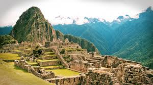
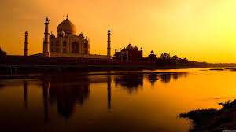

Where should you take your next Vacation?
You should go to Greece!

This beautiful country is located in southern Europe, forming an irregular-shaped peninsula in the Mediterranean with two additional large peninsulas projecting from it: the Chalcidice and the Peloponnese. The Greek islands are generally subdivided into two groups, according to location: the Ionian islands (including Corfu, Cephalonia, and Leucas) west of the mainland and the Aegean islands (including Euboea, Samos, Chios, Lesbos, and Crete) to the east and south. North-central Greece, Epirus, and western Macedonia are all mountainous. The main chain of the Pindus Mountains extends from northwest Greece to the Peloponnese. Mount Olympus, rising to 9,570 ft (2,909 m), is the highest point in the country.
You should go to Peru!
Because it has so many different ecosystems, Peru is home to a wider variety of plants and animals than most other countries on Earth. For many reasons, Peruvians have not had as much of an impact on their natural world as many other countries, and much of these ecosystems have been undisturbed. A 250-acre (100-hectare) plot of Peruvian rain forest is home to more than 6,000 kinds of plants! There are hundreds of species that are only found in the Amazon. To protect these plants and animals, Peru has created special forest areas called reserves.
You should go to India!
India is a country in South Asia. It is the Seventh-Largest country by area and second-largest by population and most populous democracy in the world. Home to the Indus Valley Civilization and a region of historic trade routes and vast empires, the Indian subcontinent was identified with its commercial and cultural wealth for much of its long history. Four major world religions, Hinduism, Buddhism, Jainism and Sikhism originated there, while Zoroastrianism, Judaism, Christianity and Islam arrived in the first millennium CE and shaped the region's diverse culture.